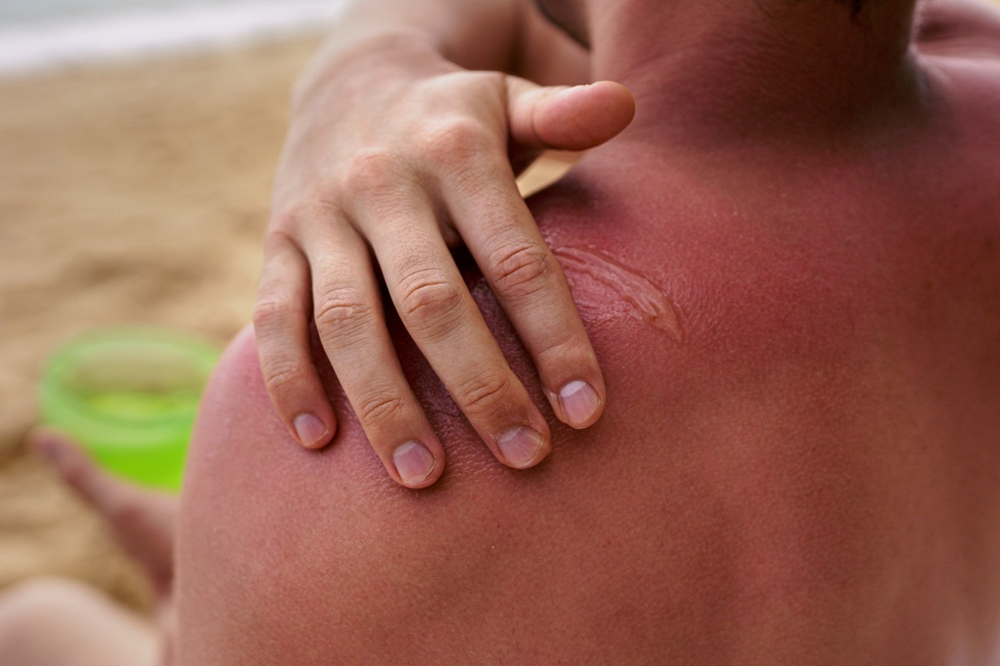
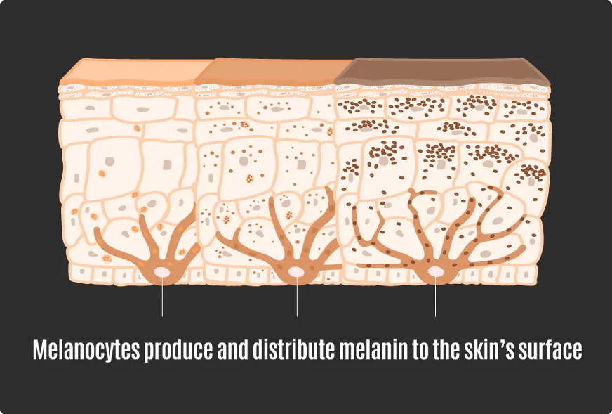

↗︎ Only 38.1% of Australians used SPF30+ when it was recommended

↗︎ 1 in 14 Australians experienced sunburn in a single week during summer

↗︎ 1 in 4 young women aged 15 to 24 tried suntanning in the last 12 months
The days are getting longer, the holidays draw nearer, and the Aussie sun grows warmer.
↗︎Despite the massive focus on sun safety in Australia - with campaigns such as 'Slip, Slap, Slop' - many of us still neglect to use adequate sun protection. In the spring/summer of 2023-2024:
↗︎ Only 38.1% of Australians used SPF30+ when it was recommended

↗︎ 1 in 14 Australians experienced sunburn in a single week during summer
↗︎ 1 in 4 young women aged 15 to 24 tried suntanning in the last 12 months
*Based on data from the Australian Bureau of Statistics.
From the 1920s, having a
suntan became a social fad ,
with
the cosmetic industry using beauty parlour sunlamps to
promote darker skin tones. However, skin cancer
research began to illuminate the dangers associated with consistent exposure to sunlight.
Today,
skin
tone dissatisfaction leads Australians to
decrease sun protection and increase sun exposure. All the while, overexposure to UV is responsible
for
up to 95% of melanomas, the deadliest form of skin cancer. Damage to your skin can
happen
well before you develop a sunburn or tan, and it can’t be reversed.
As of 2025 it is estimated that a person has a
1 in 19 risk of being diagnosed with melanoma of the skin by
the
age
of 85. In Australia, it is the third most commonly diagnosed cancer, and in 2023, was the
tenth most common
cause
of
cancer death.
Melanoma develops from the
cells in our skin that produce the pigment melanin,
which
gives
it
a tanned appearance. These so-called melanocytes shield other cells from harmful ultraviolet (UV) radiation
from
the
sun, but at a cost.

↗︎
Skin colour is determined by the level of melanin within an individual's skin. Those with lighter
skin
tones have much less melanin than those with darker skin tones.
Melanin is produced by
specialised
skin
cells called melanocytes which produce and distribute melanin to the skin's surface.
Melanin plays a crucial role in protecting the cells in our skin from harmful UV rays. Tanning occurs when UV radiation hits melanocytes, causing them to produce melanin in order to protect the skin against further damage from UV rays.

Without adequate sun protection, our skin is susceptible to both UVA and UVB. These types of radiation have two main effects on our skin cells:
UV radiation can damage the DNA within Melanocytes. If this is not properly repaired, the cell can develop various mutations which alter cell function. Normally, cells know when it is time to stop growing and eventually die. However, these mutations can lead to melanocytes growing uncontrollably.

This ultimately leads to the development of a tumour. If the tumour remains unchecked, it may spread to other parts of the body, a process known as metastasising. This is where cancer can become truly dangerous, as the tumour is no longer localised in the skin, but rather in many places across the body, such as the lungs, bloodstream, etc.
Secondly, UV radiation also impacts the immune system,
suppressing its function. Why does this
matter? The immune system not only protects us from external threats, but also internal ones, such
as tumours.
This is achieved through a process of
immune surveillance, where our immune cells are
constantly
checking to make sure that no threats are present in our body. This allows the immune system to
combat mutated cells in the following ways:
All cells in the body display molecules known as antigens on their cell surface through attaching them to a cell surface marker known as MHC. These antigens can be recognised by immune cells to determine if a cell is healthy. Some antigens are normally found in the body (self-antigens) and they can be encoded by DNA, which acts as the instructions to make all cell products. Therefore, mutations in DNA may lead to changes in self-antigens, causing them to become tumour-antigens. Immune cells recognise that these antigens would not come from a normal cell, and therefore, something is wrong.


Made with Biorender.
Antigens that are found in the body or taken up when a cell is killed are
constantly being displayed by specialised cells, known as Antigen Presenting Cells (APCs).
These cells interact with another type of immune cell, T helper cells, whose job is to
recognise a specific antigen not found in the body, such as tumour antigens. If the T helper
cell does recognise a tumour antigen displayed by the APC, then it will become activated.
This enables it to in turn activate other immune cells and direct a response at the mutated
cell to destroy it.
These functions allow mutated cells to be killed before the tumour
develops any
further.
Whilst the immune system has many tools to destroy tumours cells, tumours also have their own strategies of evading destruction. When tumours are successful in evading the immune system, this is when the cancer becomes the most deadly, as it can grow uncontrollably and spread to other parts of the body.
When tumour cells rapidly multiply, some of these cells may have mutations. One of which may affect
the pathway that produces MHC or brings it to the surface. If this occurs, immune cells cannot
recognise the tumour cell as a threat.
Another mutation that can occur in tumour cells as they multiply is that one fails to produce tumour antigen. This means that immune cells are no longer able to recognise the tumour cell as dangerous and will not destroy it.
Tumour cells can produce signals which suppress the functions of immune cells. Cell surface molecules can directly inhibit an immune cell from activating. Messages can be sent outside of the cell, directing a subset of T cell to suppress the function of other immune cells.
The Natural Killer cell, another immune cell, can recognise and destroy cells lacking MHC on their surface, which can counterract the first strategy. However, this is the only evasion strategy we can counterract. Through the second strategy, tumours make themselves invisible to our immune cells and the third strategy exploits the natural regulation of immune cells. Ultimately, this lets tumours evade destruction and continue growing uncontrollably.
Individuals with
fair skin, high sun sensitivity, freckles, light eyes, and
red or
light hair
have an increased risk of developing melanoma. However, if you don’t have
any of
these features, that does not mean you are immune to the effects of the sun. Everyone is susceptible
to sun
damage. Whilst individuals with darker skin tones may not be diagnosed with melanoma as often,
when they are
diagnosed, it is usually in a later stage of the disease. This means that people of colour are
4 times more
likely to be diagnosed with advanced melanoma and 1.5 times more likely to die from the disease.
UV damage can appear in ways other than skin
cancer as well. Unprotected sun exposure can lead to
premature skin aging (photoaging).
This may lead to uneven skin colour or texture, lines and wrinkles, pigment changes such as dark or light
spots and more.
In order to enjoy the outdoors in summer, it’s important that we protect our skin appropriately. When the UV index is 3 or above, it is recommended to use multiple forms of sun protection.
In Australia, over 1700 cases of Melanoma have been prevented in the last decade through consistent sunscreen use. Sunscreens work by absorbing or reflecting UV radiation, blocking it from reaching the skin. They are labelled based on their sun protection factor (SPF), which describes their ability to block ultraviolet B (UVB) rays. Opt for SPF50+ for the best protection.
Create a physical barrier between the sun and your skin through clothes.
Protection for your skin and eyes. The wider the brim the better.
Find breaks from direct sunlight under trees, an umbrella or other shady areas.
UV exposure can be incredibly harmful to your eyes, so protect them with a pair of sunglasses.
Additionally, there are alternatives for getting a tanned appearance that don’t require harmful sun exposure. On the market there are many commercially available fake tans which stain the outer layer of dead skin, providing a tanned appearance without the damage.
So, next time you consider leaving the house in summer without sun protection, think about what you’re really risking.